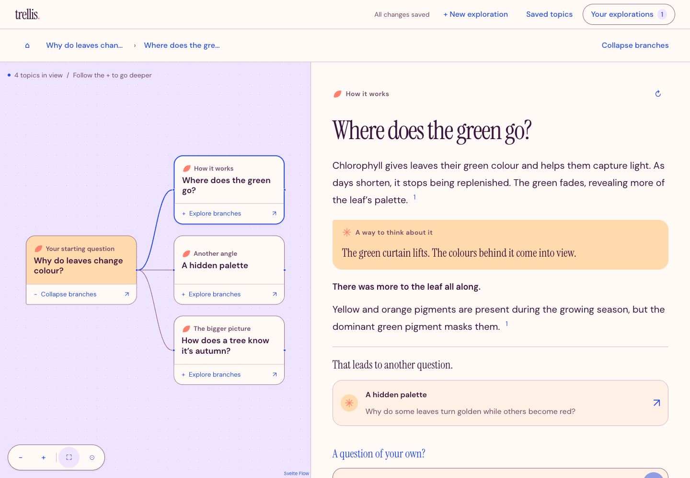

For the joy of finding out.
One thing leads to another.
Ask a question. Follow a cited answer.
See where the next connection takes you.
Pick a thought. See where it takes you.
A little curiosity goes a long way. Choose a question to explore.
A prewritten sample.
Your questions come to life in the app.
THIS IS TRELLIS
Make room for
the unexpected.
A little question becomes a map of possibilities. Read a cited explanation, follow a suggested branch, or ask something of your own. Your library keeps the thread.

A map for the big picture. A reader for the finer details.
01 Follow the branches.
Suggested questions, or one of your own.
02 Go back to the source.
Citations beside the explanation.
03 Keep the interesting bits.
Saved topics, explorations, and answer history.
Prewritten sample content.
See where it begins A welcoming start. A question of your own. A trail to return to.
THERE IS ALWAYS ANOTHER QUESTION.
Stay a little
curious.
Give your questions a place to go.
Run Trellis on your own server.
AI-assisted research uses your OpenAI and Tavily keys. Provider usage may incur charges.
A few things before you start
Trellis runs with a Rust backend and a Svelte frontend. The repository’s pinned development tools and setup guide walk you through building and running it.
Your saved library lives on your server, behind a private access link. Live research sends questions to your configured providers. This public page uses prewritten examples and makes no research calls.
Self-hosted.
Source-linked.
Yours to explore.